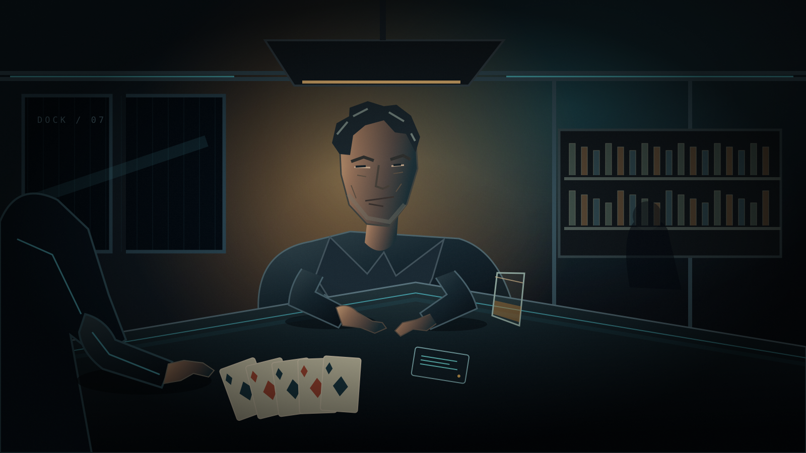
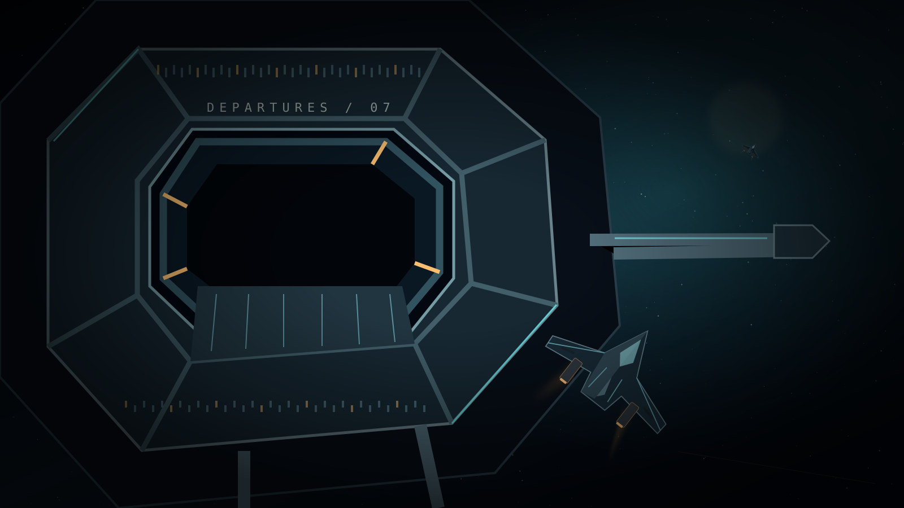
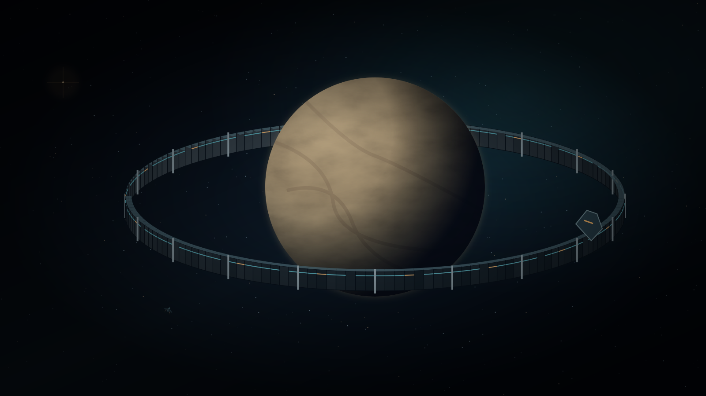
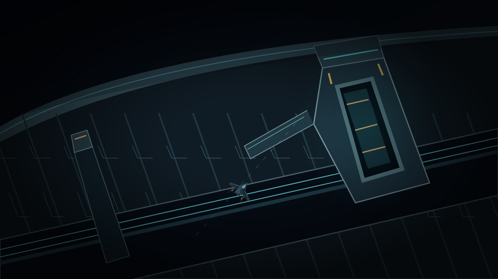

YOU HAVE CONTROL
Animatic ends here. In the game this leads to the mandatory cockpit-controls briefing, then the existing landing. This review does not launch the game.
What this review establishes
The story, approximate dialogue rhythm, framing, color relationships and transition from an intimate wager to an enormous abandoned place. The drawings are original vector storyboard keyframes; camera moves and dissolves are editorial studies, not finished animation.
Provisional visual scale
The Narcean Ring is framed at a 1,000 km outer radius around a 440 km radius world. The Ash is about 10.5 m long and 9.7 m wide; the wide shot keeps it under 3% of the ring's apparent diameter, while the close approach fits it through a 20 m clear opening. These are visual targets, not locked engineering specifications.
Not approved for the game
Mark's voice is a temporary neural audition sharing Rob's existing profile; it needs a distinct final casting. Facial acting, hand action, lip sync, ship motion, physical ring geometry and final score are not represented. Do not mistake camera movement across a drawing for those finished shots.

01 — The last hand
02 — Departure
03 — Beyond the frontier
04 — The approach